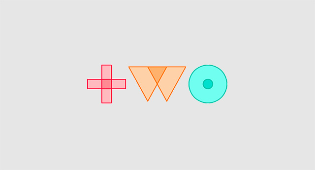
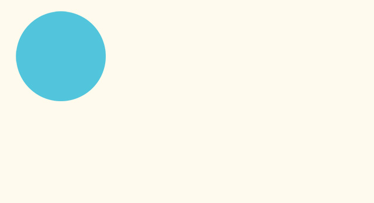
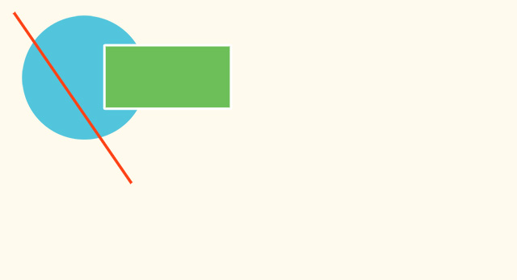
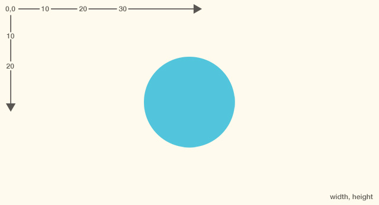
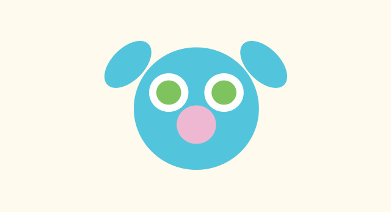
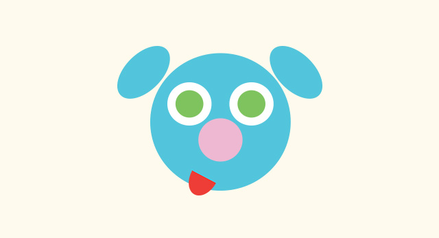

Drawing with code can be a walk in the park with the help of Javascript and the handy drawing library Two.js. In just a few lines of code your browser becomes your sketchbook.
A great project for: Dog lovers, doodlers, and javascript junkies.
Drawing a puppy seems simple (and it is with Two.js!) but it requires a little experience with Javascript first. If you’ve never ventured into the JS tab on Coder you might want to start with a previous project.
This project will introduce you to Javascript, the JS tab and how to make your computer do some of the thinking for you.
What time is it? You’ll finally be able to answer that question after you’ve built this simple clock.
In this project we’ll be using a 2D drawing library for Javascript. You can download the two.js file here (right click the link and download to your desktop). There's also a ton more to learn about at the Two.js website.

Let’s get drawing! We’ll need to do a little bit of set up, but once we’ve got the pieces in place we’ll be able to draw with just a few lines of code. First we’ll upload the Two.js library to our project, then we’ll tell the code how to find Two.js. We’re actually already using some other helpful javascript libraries, like jQuery & Ace, so adding Two.js will be a breeze. In fact you can use all sorts of helpful libraries with Coder using these same steps.
Our code looks like this. Note that your path might look a tiny bit different if you've named your project differently.
Our full <body> code looks like this:
Our full CSS code looks like this:
Nothing to look at quite yet. But now it’s on to the JS tab where all the magic happens.

With two.js and just a few lines of code we can start drawing simple shapes anywhere in the browser window. Here’s the first bit of javascript we’ll add (inside the $(document).ready( function() ) to our JS tab to draw a blue circle. We’ll go through it line by line below.
Our code looks like this:
Not too crazy, right? Let’s go through line by line and see what each does.
If you’ve got everything typed in correctly you should see a blue circle in the top left of your preview screen. Try changing some of the numbers used for the circle or swap in your favorite HEX color.

Step 2 covered the basics of Two.js but before we dive into drawing our puppy let’s play with 2 more draw functions in Two.js: makeLine() & makeRectangle(). They do just what you’d expect, but require slightly different code. Try adding this code before two.update().
Our code looks like this:
Based on the circle, you can probably guess what’s going on here, but let’s look at a few of the details.
You can probably imagine all sorts of cool things to draw with just these shapes. Go ahead and play around with some of the numbers or create more circles, rectangles, and lines. We’ll start fresh in step 4 to draw our puppy.

Now that we know how to draw basic shapes we can draw almost anything. When you can draw anything, why not draw a puppy? To help us draw we’re going to use a few more tricks and variables, just to make it a little bit easier.
Also, up until now we haven’t exactly explained the x and y numbers that determine position, but it’s simple. Two.js uses a basic coordinate system with 0,0 in the upper left corner of your browser, with the numbers increasing as you move down and to the right. X gets bigger to the Right, Y gets bigger toward the bottom. You’ll find that almost all graphics programming uses this same coordinate system.
So with all that in mind, let’s write some code to draw a circle in the middle of our screen, no matter what size our browser is.
Our code looks like this:
We really only needed one new line of code to center the circle in our screen. Let’s take a look.
Preview your app now and try resizing and refreshing the app. The circle won’t move when you resize the browser, just when you refresh, but it’s still a great way to position things when you’re not sure what size the browser window will be.

Oddly enough, we’re almost done! Using everything we’ve learned we can draw (almost) all of the pieces of a puppy. Check out how we’re drawing the rest of the puppy in the code below. One important thing to note, you’ll need to draw your shapes in the order you want them layered. Just like real paint, the first thing you draw will be at the bottom.
Our code after head.noStroke(); looks like this:
It looks like a lot, but it’s really just same bit of code we used to draw our circle repeated for other parts of the puppy. There are a few new things in there to draw the ear that we’ll explain now.
We still need to draw the right side of the puppy! Try making the right eye, pupil, and ear on your own based on the left side’s code. If you’re feeling lazy our code is below.
Our code looks like this:
Our puppy is almost complete, but he’s missing a mouth! That’s a more complex shape that we’ll cover in our final step.

Two.js has a few helpful methods to draw simple shapes like circles, rectangles, lines, and ellipses, but if we want to draw more complex shapes we’ll have to do it ourselves. Our puppy’s tongue is basically half an ellipse, but that makes it a unique shape that we’ll draw using a new method called two.makePolygon(). It works a little bit like a two.makeLine() but we can use as many points as we want. Check out the code for our tongue.
Our code looks like this:
If you preview this code you’ll see the tongue is pretty big and stuck in the top left corner. That’s ok, we can reposition, scale, and rotate it later. Here’s what these first few lines are doing.
Now let’s get the tongue in the right place. Here’s a few more lines of code with some new properties that help us position the tongue.
Our code looks like this:
That’s it! Preview your app, and if everything is written correctly you should see your new puppy.
Now that we’ve got the basics of drawing done, let’s see what else we can make with Two.js.
Dogs, cats, and snakes?! With the same techniques we used to draw a puppy see if you can create other crazy critters.
You can do a lot more than simple drawings with Two.js. Head over to the Two.js website to learn more about drawing, animation, and interactivity.
Like drawing with code? There’s more than one way to get pixels on the page. Try these other coder projects to make more cool things and learn more useful stuff.
Paint makes a mess. Code is so much cleaner. Use this project to recreate a classic Modern artwork, Piet Mondrian’s Composition II in Red, Blue, and Yellow in your browser with CSS and HTML.
Open ProjectLet’s turn it up. This project will transform your browser into a simple instrument that you can use to make music.
Open Project